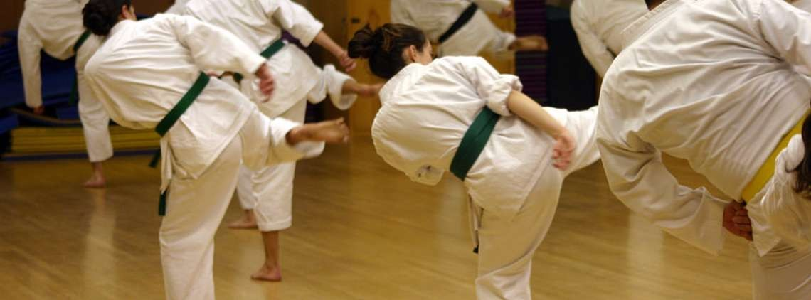
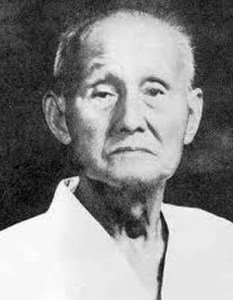
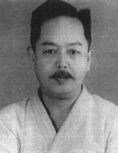
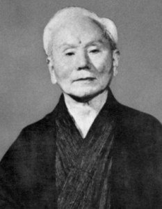

Karate Articles
THE 4 MAIN STYLES OF KARATE, AND WHO INVENTED THEM!
Karate dates back hundreds of years, but is still going strong, and for good reason. First beginning on the trading island of Okinawa, the word Karate was used to describe a weaponless self-defense style that at the time was very important to know – thanks to all the pirates, thieves, and dodgy locals.
1. Wado-ryu
Created by Hienori Otsuka in 1939, this type is relatively new. It is heavily influenced by Gichin
Funakoshi Jiu-jitsu and traditional Okinawan karate techniques. The name translates to “way of
harmony”, describing the basic movements associated with Jiu-jitsu and focuses on being able to
avoid attacks rather than fighting back. The evading fluid and mobile techniques focus on using as
little force as possible, avoiding hard contact sparring, leaving many to describe Wado-ryu as more
of a spiritual discipline rather than a fighting discipline.
The use of Taisabaki (body shifting, or body management) helps minimize an opponent’s attack, and
Wado-ryu also uses a shorter stance that what is seen in other styles.

1. Goju-ryu
Founded in 1930 by Chojun Miyagi, this has now become one of the major schools today. Miyagi decided
it was necessary to open a new school and focus on more hard-hitting techniques. As a result, he
decided to name his new art Goju-ryu Karate, meaning “hard and soft”, as the tradition took
inspiration from the precepts of traditional Chinese Kempo. The style implements soft circular
blocking techniques that combo perfectly with powerful counter-strike attacks.
Miyagi was the student of the legendary Sensei, Kanryo Higaonna, well known for introducing eight
specific forms he learnt from Chinese martial arts into the Karate that he taught to his Japanese
students.
1. Shito-ryu
The name of the style “Shito-ryu” is derived from Kenwa Mabuni Sensei’s two teachers: Ankō Itosu, a famous teacher of Shuri-te karate, and Kanryō Higaonna, a prominent teacher of Naha-te karate. This tradition was introduced in 1928 and utilizes an estimated 50 katas! Technique is the key to this style, and focuses even more on power and heavy strikes – one of the more aggressive schools of thought in Karate. It explores both internal and external martial arts, combining powerful stances we see in things like Shotokan, as well as bringing the ki inside and focusing on breathing power, similar to that of Goju-ryu.

1. Shotokan
Shotokan is probably one of the main sub-styles of the Karate we see today. Founded by Gichin Funakoshi, it is considered to be the foundation of modern Karate, and Funakoshi is often credited as one of modern-day karate’s founding masters. Born in the birthplace of Karate, Okinawa, in 1868, he studied with one of the most well-respected karate masters of the time – Yasutsune Azato. After moving to Tokyo in 1921, he brought all his knowledge with him and infected the mainland with his style of fighting. The name “Shotokan” was created by Funakoshi himself, mimicking the pen-name he used to use to sign poems in his younger days. The style makes use of linear techniques and wide stances, bringing more balance and power to the fighter. It is designed to deliver quick, powerful strikes while also being perfectly adapted to strong defense.
 close